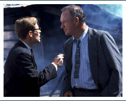

I recently attended the 40th anniversary screening of “Young Frankenstein” at the Motion Picture Academy. Mel Brooks and Cloris Leachman were in attendance, doing a Q&A before the film. Even Teri Garr, battling multiple sclerosis, showed up to answer questions and tell stories, and she was charming and lovely. I scoured the stage, but no sign of Gene Hackman. He wasn’t scheduled, but this was Los Angeles, so you never know who might show up.
But Hackman had been retired since 2004, and if you’re retired from the movie business, chances are you aren’t in Los Angeles anymore. When Q&A moderator Leonard Maltin read a letter that Hackman wrote for the crowd in attendance, I knew he wouldn’t be an unannounced guest. He really was sticking to this retirement thing.
One could easily forget that Gene Hackman was in “Young Frankenstein”. As the blind man visited by Frankenstein’s monster, he drives his scene, letting Second City-trained, established comic Peter Boyle handle straight man duties. It’s all on Hackman, and he garners some of the film’s biggest laughs. Hackman wasn’t known for comedy, yet he’s in one of the most admired comedies of all time. Then again, he’s not known for Westerns, yet he’s in one of the most admired westerns of all time (“Unforgiven”). He’s also not known for superhero movies (“Superman”) or sports movies (“Hoosiers”), but he’s…well, let’s just say that Gene Hackman has appeared in some of the best movies of all time. And I miss him.
Has it really been ten years since Gene Hackman appeared in a film? I suppose after ninety-nine roles over thirty-three years, he probably felt he had done it all, with two Oscars to cap his success. In case you’ve forgotten all the great performances Hackman’s given us over the years, click your way on over to IMDB and be reminded. He could be the official co-President (with Paul Newman) of the Makin’-it-Look-Easy school of acting, whose other Board of Executives includes Redford, Burton and Duvall. And don’t be fooled by some of the bad movies on that IMDB list, ‘cause they were never bad because of Hackman.
Gene Hackman had an extraordinary ability to be in a wide variety of films and be authentic in each of them. I ALWAYS bought him. He could bring authority to a part like Capt. Frank Ramsey in “Crimson Tide” and you believe him. His years of service and experience showed in his demeanor and delivery. In “Get Shorty”, he was just as convincing as sniveling movie producer Harry Zimm, his zeal and desperation pouring out in every scene. Both performances are indicative of every performance of Hackman’s: – truthful.
His retirement has to have made casting directors slightly mad over the last ten years. For decades, ANY part that came across their desk, they could just call Gene Hackman and he would bring the goods. Now, they have to go through looking at actor profiles, casting sessions, callbacks, it must be a pain in the ass.
My favorite performance of Hackman’s is in Alan Parker’s “Mississippi Burning”, a film so remarkably genuine in its re-creation of place and time, it almost required Gene Hackman to maintain that credibility. The role of a former sheriff, now working for the FBI, brought in to Jessup County, Mississippi to investigate the murders of civil rights workers brought out the best of every type of Hackman we’ve seen in the movies. To get under the skin of the locals, he had to be a good ‘ol boy, to employ his style of investigation, he had to have a forceful hand, he needed to be a bully towards the town racists, and be gentle with the sheriff’s wife, while falling for her. You get to see his spark, his power and his masterful subtlety, all pistons are firing. He should have three Oscars.
So can we get him back for more? He’s 84 now, and plenty of actors of a similar age are still cranking out projects, like Christopher Nolan staple Michael Caine, who has three films coming out next year, and the aforementioned Leachman, who just burned through the challenging schedule of a sitcom (“Raising Hope”). Max von Sydow is shooting the new “Star Wars” movie and Christopher Plummer just won an Oscar.
It won’t be weird, Gene (if I may just talk to you directly). Come back. One more part will knock your IMDB count up to a round, solid one hundred credits, a better way to go out.
Speaking of going out big, Gene, you can’t go out on “Welcome to Mooseport”. That was your last film, the underwhelming Ray Romano comedy about a wacky, small town mayoral race. You’re one of an unfortunate rash of legendary actors retiring wrong. Sean Connery went out on “The League of Extraordinary Gentlemen”. I believe that if Stephen Norrington knew Connery would be done after that film, he’d have tried harder. In researching this article, I found out that Jack Nicholson is pretty much done. He hasn’t been on screen since 2010 with nothing in development, but can he really wrap that incredible career up with “How Do You Know”, the film that never even got the lack of a question mark in its title right?
Who’s the next Hackman? We’ve still got one more decade of Jeff Bridges if he retires the same age Hackman did. Philip Seymour Hoffman had a shot to follow in his footsteps, but now that he’s gone, I don’t see anyone coming up behind him. I see a lot of people working really hard and coming up short, so that leaves…Gene. For one more go-round. C’mon. One more. Retire big.
“God wants you on the floor.”
- Coach Norman Dale, HOOSIERS
THE MOVIE GUYS
Giving the Industry the Business
TheMovieGuys.net
Catch Our Weekly Comedy Show!